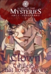
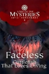
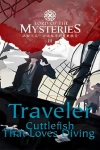

Volúmenes

- Capítulo 1: Carmesí - Un despertar en un mundo ajeno.
- Capítulo 2: Una reunión ordinaria - Primeros pasos en una nueva sociedad.
- Capítulo 3: "El Loco" - El nacimiento del Tarot Club.
- Capítulo 4: La primera "reunión" - Los miembros se presentan.

- Capítulo 210: El Diario de Roselle - Nuevas pistas del pasado.
- Capítulo 211: Backlund - La llegada a la capital.
- Capítulo 212: El Ojo que Todo lo Ve - Investigando una nueva organización.
- Capítulo 213: El Héroe Bandido... - Comienza la actuación.

- Capítulo 492: Gehrman Sparrow - Nace una nueva y temible identidad.
- Capítulo 493: La Ciudad de la Generosidad - Primera parada en un nuevo continente.
- Capítulo 494: El Obispo Loco - Un encuentro con un poderoso Beyonder.
- Capítulo 495: El Futuro Almirante de las Estrellas - Un nuevo aliado se une al viaje.